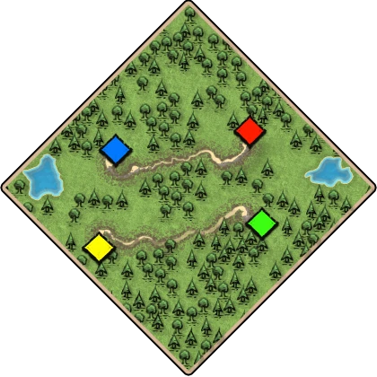

黑森林 Black Forest封闭陆图

地图特点
黑森林：被树海分割的草地小岛。中间有小路通向敌人和盟友。
开局参考
先围口并稳住通道再发展经济；持续留意敌方开林和新通路，避免防线被绕开。
边路推荐 Flank
不列颠Britons 步弓射程长，适合边路对射。 玛雅Mayans 弓更便宜，边路可以一直补。 越南Vietnamese 弓和掷矛手更耐打，边路被压时好守。中路推荐 Pocket
中路推荐待补
反馈数据缺口来源与核对日期
地图与开局

黑森林：被树海分割的草地小岛。中间有小路通向敌人和盟友。
先围口并稳住通道再发展经济；持续留意敌方开林和新通路，避免防线被绕开。
中路推荐待补
反馈数据缺口来源与核对日期
inbox，不用红。反馈是现有 FeedbackLink，kind="data"，文案「反馈数据缺口」。